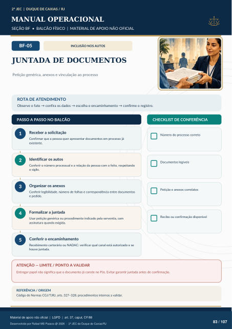

INCLUSÃO NOS AUTOS
JUNTADA DE DOCUMENTOS
Petição genérica, anexos e vinculação ao processo
ROTA DE ATENDIMENTO
Observe o fato → confira os dados → escolha o encaminhamento → confirme o registro.
PASSO A PASSO NO BALCÃO
CHECKLIST DE CONFERÊNCIA
Receber a solicitação
Confirmar que a pessoa quer apresentar documentos em processo já existente.
Identificar os autos
Conferir o número processual e a relação da pessoa com o feito, respeitando o sigilo.
Organizar os anexos
Conferir legibilidade, número de folhas e correspondência entre documentos e pedido.
Formalizar a juntada
Usar petição genérica ou procedimento indicado pela serventia, com assinatura quando exigida.
Conferir o encaminhamento
Recebimento cartorário ou NADAC: verificar qual canal está autorizado e se houve juntada. Número do processo correto Documentos legíveis Petição e anexos correlatos Recibo ou confirmação disponível
ATENÇÃO — LIMITE / PONTO A VALIDAR
Entregar papel não significa que o documento já conste no PJe. Evitar garantir juntada antes de confirmação.
REFERÊNCIA / ORIGEM
Código de Normas CGJ/TJRJ, arts. 327–328; procedimentos internos a validar.
Ver também o infográfico original (página 83)
